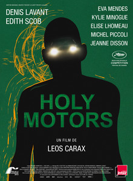

Holy Motors

Leos Carax
2012
115 minutes
Wikipedia link
IMDB link
TV Tropes link
This is text.
Time to choose something different:
- "I hate the way you crawl out of sewers, and the way you cut your hair. I hate when you bite people's fingers off and make everybody stare!" - Turn to section 164
- Those limousines are symbols of western decadence, and they'll be the first against the wall when the revolution comes! - Turn to section 111
- Seeing someone act as a one-man guerrilla theater company is pretty inspiring. Maybe I should start my own band! - Turn to section 223